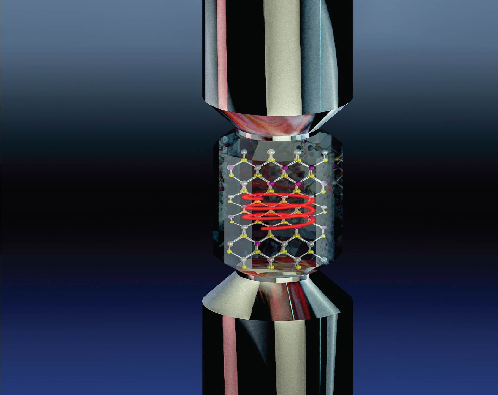

Ultrafast Control of Chirality
Chirality, the property of an object being distinguishable from its mirror image, plays a fundamental role across physics, chemistry, and biology. It underpins phenomena ranging from optical activity in solids to enantioselective interactions in molecular systems and the structure of biomolecules such as proteins and DNA.

Photo-induced chirality can be generated in solids on ultrafast timescales by selectively driving lattice vibrations. Nonlinear coupling between phonon modes allows optical excitation to transiently lift the balance between left- and right-handed substructures, resulting in a dynamically induced chiral state.
This approach establishes a new paradigm for controlling chirality far from equilibrium, enabling dynamic manipulation of symmetry and optical responses in condensed matter systems.
Selected Press Coverage
- Science Perspective: Chirality a la carte
- MPSD press release: Terahertz pulses induce chirality in a non-chiral crystal
- Univ. of Oxford press release: Terahertz pulses induce chirality in a non-chiral crystal
- Optics & Photonics News: Inducing chirality in a nonchiral crystal
- pro-physik: Händigkeit ultraschnell schalten
- phys.org: Terahertz pulses induce chirality in a non-chiral crystal
Light-Induced Switching of Novel Ferroic Order
Ferroic orders such as ferroelectricity and ferroaxiality enable switchable symmetry-breaking states in functional materials. Controlling these orders using light provides a pathway toward ultrafast and non-thermal manipulation of material properties.

Selective excitation of lattice vibrations enables reversible switching of ferroaxial order through nonlinear phonon interactions, accessing transient and metastable states with modified symmetry. This demonstrates optical control of ferroic degrees of freedom and enables non-volatile switching driven by light.
Selected Press Coverage
- Science Perspective: A light switch for a hidden order
- MPSD press release: A new type of light-controlled non-volatile memory
- Univ. of Oxford press release: Light-controlled switching of ferroaxial states opens path to ultrafast data storage
- New Scientist: Swirly lasers can control an ungovernable cousin of magnetism
- phys.org: Stable ferroaxial states offer a new type of light-controlled non-volatile memory
- SciTechDaily: Terahertz light unlocks a new class of non-volatile memory
Strain-Induced Chirality
Strain provides a powerful route to control material properties by modifying lattice symmetry. Established effects such as piezoelectricity and piezomagnetism highlight the coupling between mechanical deformation and functional responses.

The piezochiral effect introduces a new strain-controlled functionality, enabling direct coupling between uniaxial strain and structural chirality. This mechanism extends the family of strain-driven phenomena and provides a pathway for deterministic control of chirality.
Piezochiral Database
Open-access resource containing over 40,000 candidate piezochiral materials, with searchable symmetry classifications, piezochiral tensor forms, and materials data.
Nature, in press (2026); arXiv:2510.21674